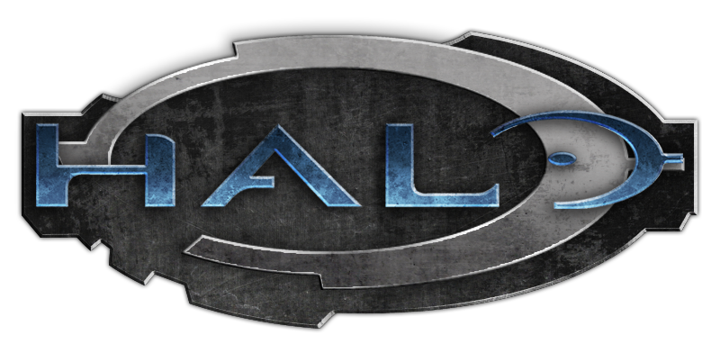
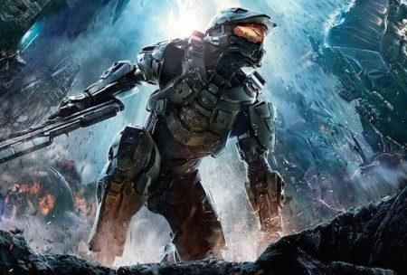
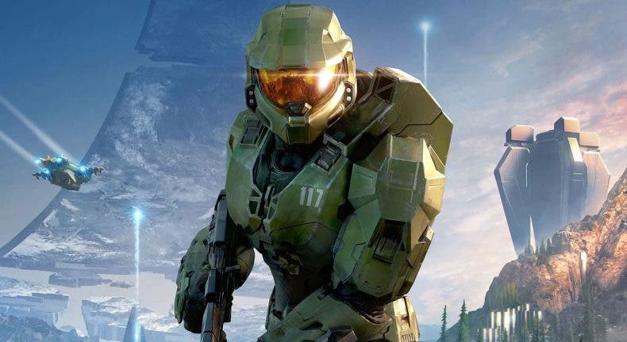
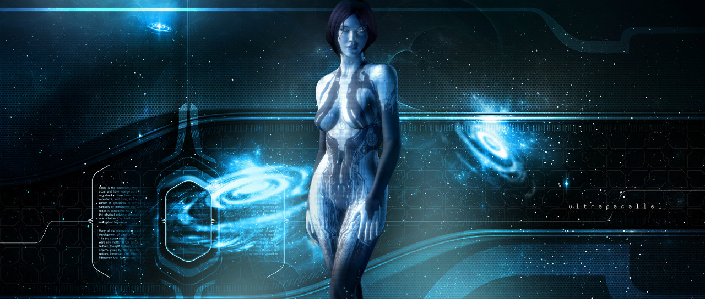
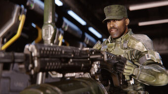
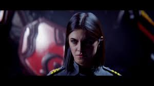
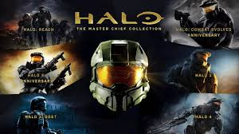

¿Qué es "Halo" como franquicia de videojuegos?
Halo es una franquicia de videojuegos de ciencia ficción creada y desarrollada por Bungie Studios hasta Halo: Reach, y gestionada ahora por 343 Industries, propiedad de Microsoft Studios. La serie se centra en una guerra interestelar entre la humanidad y una alianza teocrática de alienígenas conocidos como Covenant o Pacto, y más tarde, se encontrarán más amenazas como los Floods y los Prometeos. El Covenant es guiado por sus líderes religiosos, los profetas, y adoran a una antigua civilización conocida como los Forerunners, quienes perecieron en combate con el parásito Flood. Muchos de los juegos se centran en las experiencias del jefe maestro John-117, un súper soldado humano biológicamente mejorado, y su compañera inteligencia artificial (IA), Cortana.

Entregas principales que siguien la cronología de "Halo infinite"
En esta lista solo incluí los títulos principales de la franquicia sin contar spin-offs:
- Halo: Combat Evolved (2001)
- Halo 2 (2004)
- Halo 3 (2007)
- Halo 4 (2012)
- Halo 5 : Guardians (2015)
Personajes principales a lo largo de la saga
- Master Chief: Es un personaje y el protagonista principal de la serie de videojuegos Halo. SPARTAN-117 es uno de los últimos soldados Spartan del proyecto SPARTAN-II, nombre clave del proyecto creado por la UNSC para crear supersoldados capaces de repeler las fuerzas de combate del Covenant o Forerunner. Cortana, es la IA (inteligencia artificial) que lo acompaña en los dos primeros juegos y que es rescatada en el tercero. Durante la historia, lo acompaña también el Inquisidor (aunque al principio ambos fueron enemigos y fueron héroes en sus bandos, luego se unen en la batalla), además del sargento Johnson y la comandante Miranda Keyes.

- Cortana:
Es una inteligencia artificial de la UNSC, y compañera del Jefe Maestro. Fue construida clonando el cerebro de Catherine Elizabeth Halsey, la creadora del proyecto Spartan. Esta es una de las razones por las que se cree que Cortana eligió a John-117 de entre todos los Spartans en servicio, ya que este era el preferido de la Doctora Halsey. Al comienzo de Halo 3, Cortana explica que lo eligió por ser el Spartan más afortunado de todos. Su misión principal consiste en ayudar a los Spartans a capturar a los Profetas del Covenant para luego poder negociar la paz.
A diferencia de las entidades con inteligencia artificial Forerunner (343 Guilty Spark, 2401 Penitent Tangent), Cortana no posee forma física. De todas formas, tiene la habilidad de comunicarse por medio de una fuerte voz femenina, y por medio de una imagen holográfica cuando es posible.

- Avery Johnson: Es un marino que encabeza las fuerzas humanas contra los Flood y el Covenant, Johnson en uno de los pocos marines que logran sobrevivir de la destrucción de la Instalación 04 y es rescatado por Cortana y el Jefe Maestro durante la novela Halo: First Strike. Johnson juega un rol importante en Halo 2 uniendo fuerzas con el Inquisidor para detener a Tartarus de activar la Instalación 05.1 En Halo 2 es condecorado y ascendido a sargento mayor por sus acciones heroicas.2 En Halo 3: ODST se puede ver a Johnson preguntándole a un Ingeniero lo que busca el Covenant en Nueva Mombasa y el Ingeniero enciende el cigarro de Johnson. En Halo 3 343 Guilty Spark lo mata cuando Johnson intenta activar el Halo incompleto en el Arca. Johnson es un personaje importante en la Novela Gráfica de Halo, "Breaking Quarantine", en la cual detalla como Johnson escapó del Flood en Halo: Combat Evolved, y personaje principal en la novela del 2007 Halo: Contact Harvest.

- Miranda Keyes: La comandante Miranda Keyes es la hija de Jacob Keyes y Catherine Halsey, quien todavía vivía cuando era ella más joven. Debido a la rivalidad entre Halsey y Miranda ella cambió su apellido (en ese entonces Halsey) por el de su padre (Keyes). Miranda aparece en Halo 2 y Halo 3. En el inicio de Halo 2 Keyes se presenta en la ceremonia a bordo de la plataforma de defensa El Cairo y acepta la medalla después de la muerte de su padre. Poco después, el Covenant lanza un ataque a la Tierra y ella sube a bordo con el resto de la flota en el In Amber Clad y ayuda en la defensa de Nueva Mombasa, Kenia. Cuando el profeta del Pesar se retira de la Tierra, Keyes ordena al In Amber Clad seguirlo, así descubriendo la Instalación 05, que es otro Halo. Keyes, Johnson y un grupo de marines entran en la biblioteca de Halo para obtener el índice de activación y evitar la activación del anillo mientras el Jefe Maestro asesina al Profeta del Pesar, ella y Johnson son capturados por Tartarus. Como el ¨Reclamador" para insertar el índice dentro del panel de control de Halo debe ser humano, Tartarus intenta que ella lo haga.

¿Qué es "Master Chief Collection"?
Halo: The Master Chief Collection es una remasterización de los videojuegos de disparos en primera persona de la saga Halo para la consola Xbox One, el cual salió a la venta en Estados Unidos el 11 de noviembre de 2014 y en Europa el 14 de noviembre del mismo año. Se compone de Halo 1 Combat Evolved, Halo 2, Halo 3 y Halo 4 con sus modos multijugador completos con contenido adicional. Pero también en 2014 fue añadido Halo 3 ODST como compensación por los errores en el matchmaking que la colección traía al inicio. Todos los juegos recibieron mejoras gráficas para su lanzamiento, pero a Halo 2 se le asignó alta definición como en Halo: Combat Evolved Anniversary. El videojuego incluye acceso a la serie en imagen real llamada Halo: Nightfall, así como acceso a la beta multijugador de Halo 5: Guardians, que estuvo disponible por tiempo limitado. El 12 de marzo de 2019 fue anunciado para PC y el 3 de diciembre del mismo año la colección fue lanzada para Windows 10 en la plataforma Steam. Inicialmente incluía solo a Halo Reach, pero los demás juegos saldrían a medida que fueran anunciados. Actualmente la colección está completa en Windows 10 con: Halo Reach, Halo Combat Evolved Anniversary, Halo 2 Anniversary Halo 3, Halo 3 ODST y Halo 4.

Página oficial de "Halo infinite"
Página Xbox (Halo infinte)
Regresar a la página principal